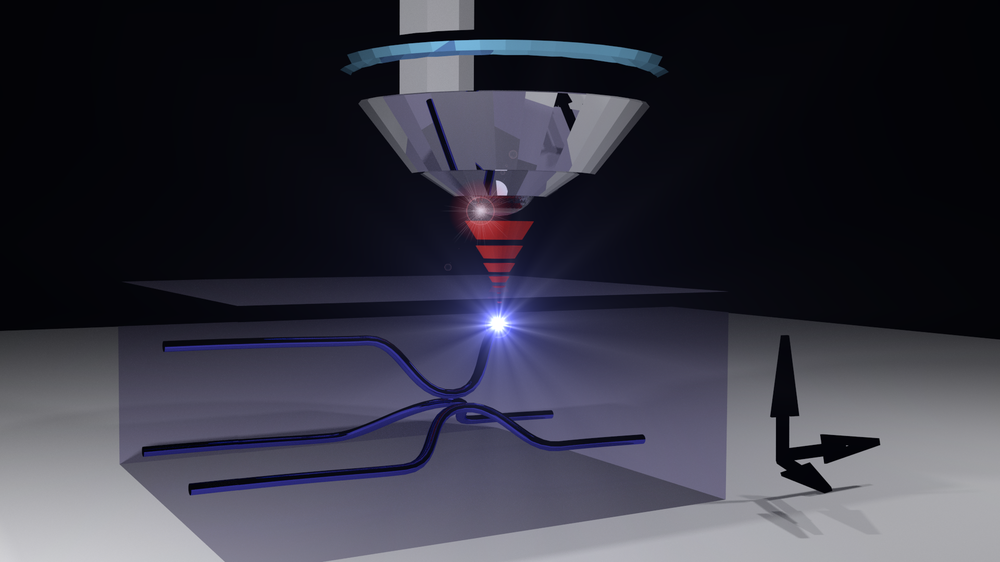

Welcome to Laser Written Circuits.
This page is all about laser written circuits in glass for a range of applications including photonic circuits, microfluidic circuits and micro structuring of 3D devices. It's a technique that's both flexible and cheap allowing low cost prototyping that could also permit scalability.
$
The site host is Thomas meany.
Review of recent advances
Guest reviewers
There are so many different applications of laser inscription in transparent media that it would be impossible to give insights into all of them. Every month a guest reviewer will provide a review of a sub-field and highlight some recent publications.
Authors and Contributors
This sites host is Thomas Meany. I completed my PhD in laser inscription of photonic circuits in glass for quantum information science applications. Please feel free to get in touch at tom@laserwrittencircuits.com